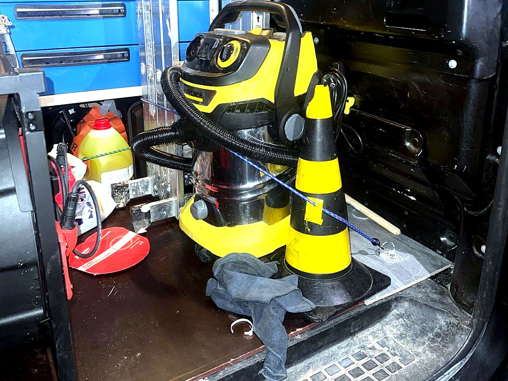

Waterlek, overstroomde kelder of verstopte WC in in Brussel en omgeving? Het is een sanitaire noodsituatie. Ons team van spoedloodgieters staat klaar om onmiddellijk te vertrekken voor ontstopping.



Echte foto's van onze interventies
Waterschade kan onherstelbare schade aan uw woning veroorzaken. Snelheid is daarom cruciaal.
Onze spoed engagements:
Een wc die overloopt, een kelder die vol water loopt, een riool dat terugstroomt: zulke problemen wachten niet tot maandag. We nemen dag en nacht op en zijn binnen 30 minuten ter plaatse in Brussel, binnen een uur in de rand.
Onze bestelwagen is uitgerust om de meeste noodgevallen in één bezoek op te lossen: elektrische veer, hogedrukmachine en inspectiecamera. Geen tweede bezoek nodig met ander materiaal.
Een eenvoudige ontstopping begint vanaf 130 € incl. btw. U krijgt een gratis inschatting via de telefoon en de prijs wordt ter plaatse bevestigd voor we beginnen. Geen teller die blijft lopen. We zijn bij u binnen 30 minuten in Brussel en binnen een uur in de rand, 24/7. Komt het probleem terug, dan komen wij terug.
In de 19 Brusselse gemeenten: Anderlecht, Oudergem, Sint-Agatha-Berchem, Brussel-Stad, Etterbeek, Evere, Vorst, Ganshoren, Elsene, Jette, Koekelberg, Laken, Sint-Jans-Molenbeek, Sint-Gillis, Sint-Joost-ten-Node, Schaarbeek, Ukkel, Watermaal-Bosvoorde, Sint-Lambrechts-Woluwe en Sint-Pieters-Woluwe. In de rand: Wemmel, Meise, Grimbergen, Vilvoorde, Machelen, Zaventem, Kraainem, Dilbeek, Asse en Drogenbos.
De prijs hangt af van de interventie en wordt vooraf meegedeeld, overdag en 's nachts.
Binnen 30 minuten in de 19 Brusselse gemeenten, binnen een uur in de rand.
Ja, 365 dagen per jaar, weekends en feestdagen inbegrepen.
Neem contact met ons op voor een snelle offerte.